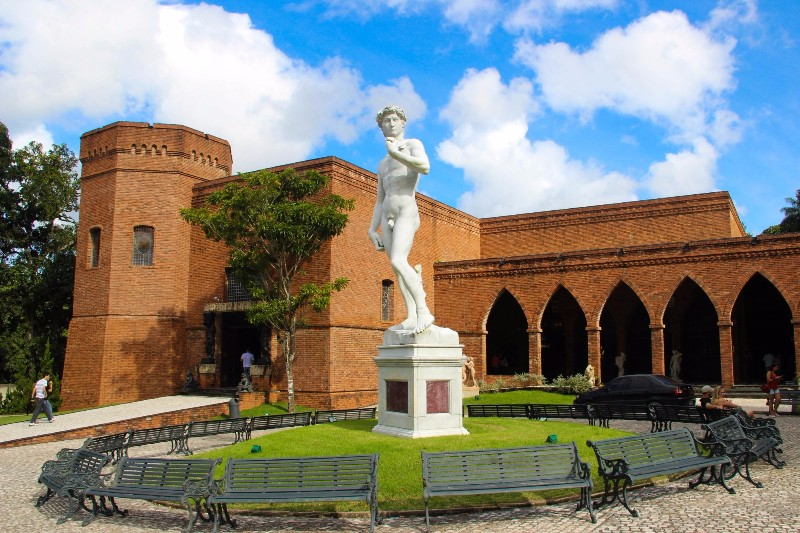
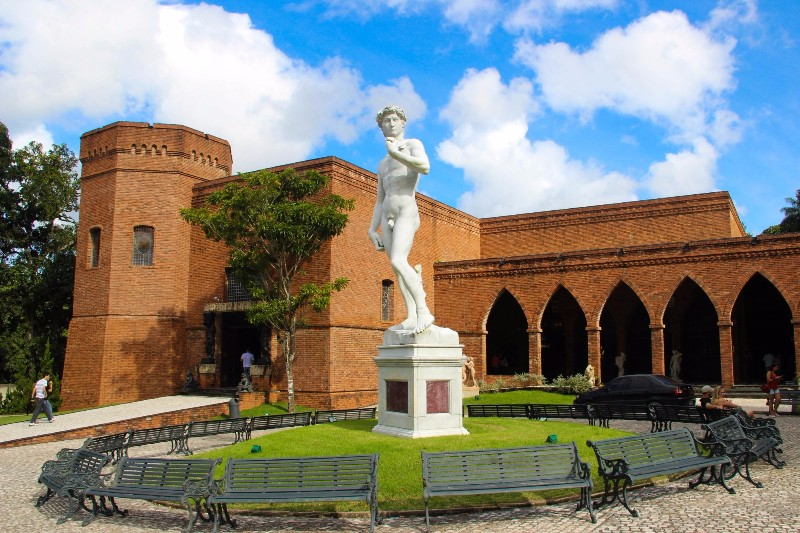

História
Uma das mais antigas cidades do Brasil, Recife surgiu por volta de 1537 como Ribeira de Mar dos Arrecifes, uma praia de pescadores e ancoradouro, onde se encontram as águas do mar e as dos rios Capibaribe e Beberibe. A povoação do Recife surgiu em 1561.
Marco Zero
Fotos


 
